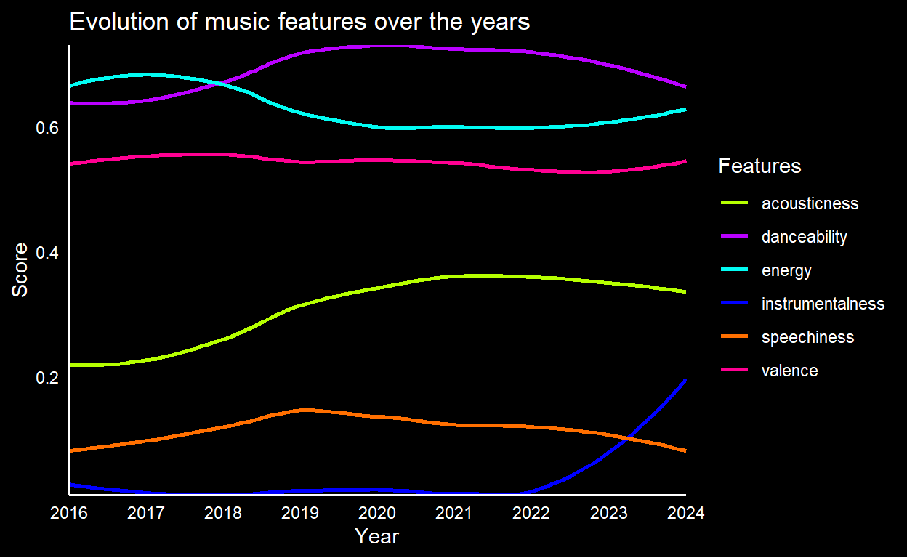
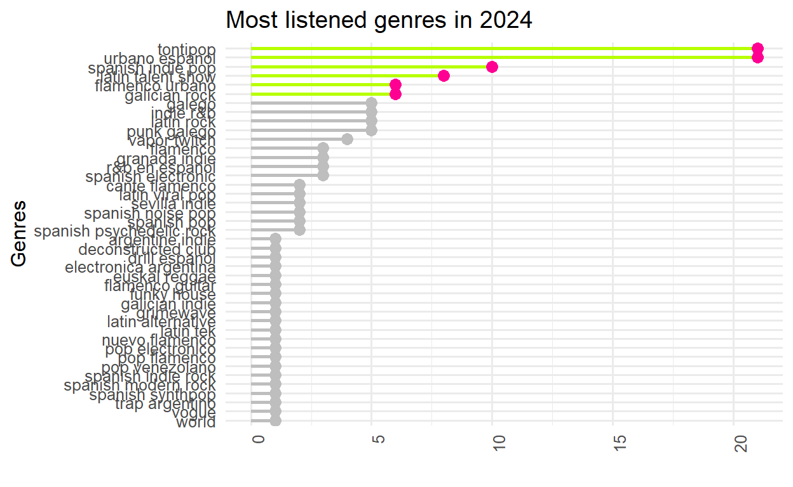
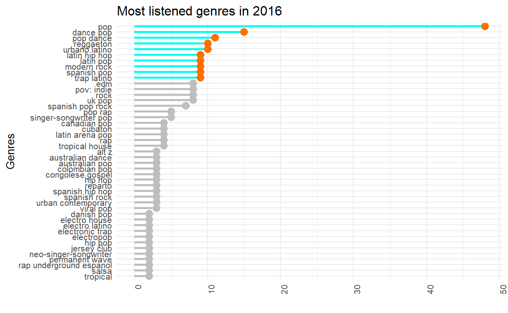
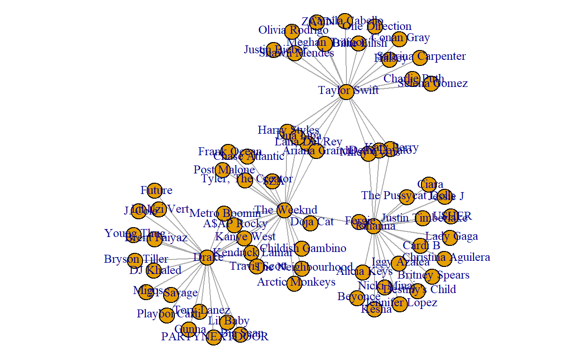
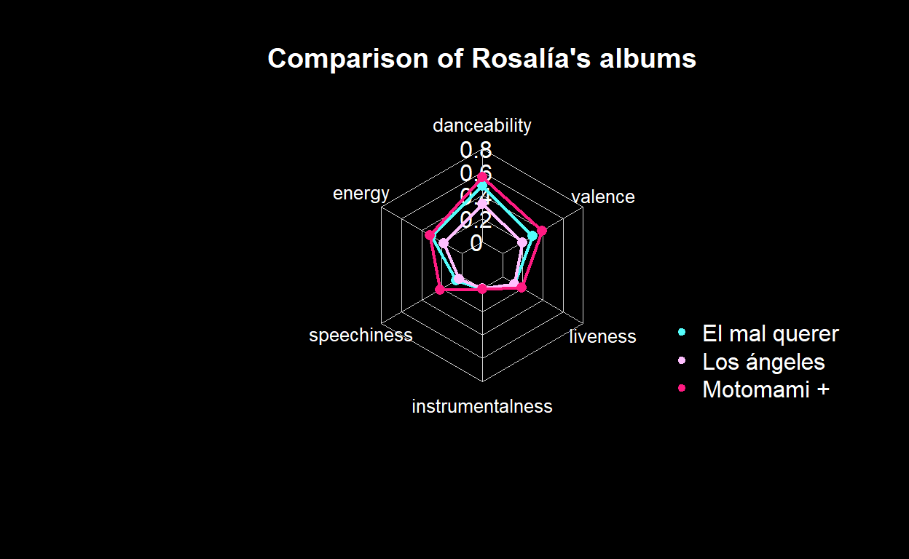

This project leverages the Spotify API to conduct sentiment analysis, uncovering the emotional trends within music selections.
library(tidyverse)
library(httr2)
library(httr)
library(ggplot2)
library(jsonlite)
library(xml2)
library(stringr)
library(stringdist)
library(stargazer)
library(plotly)
#install.packages("dotenv") Make sure you have downloaded all the libraries, especially this one.
library(dotenv)
library(fmsb)
library(data.table)
library(igraph)
library(dplyr)
library(tidyr)
library(viridis) In this data harvesting project, we’re going to use the Spotify API. This API allows programmers to access and use Spotify data to add features like searching for music, getting details about artists, albums, and playlists, and playing songs in their own applications. Moreover, it offers many tools for developing unique applications that utilize Spotify’s extensive music collection.
An API (Application Programming Interface) is a set of rules and protocols that allow different applications to communicate with each other in a structured and secure way. It serves as an intermediary that facilitates interaction between software, allowing access to resources or services of other applications without the need to understand their internal implementation. APIs have a variety of applications, from system integration and mobile application development to process automation, accelerating software development and fostering collaboration between companies in the creation of interoperable digital ecosystems.
We will use the Spotify API to delve into sentiment analysis of various musical collections, including albums and playlists. Through this process, we’ll explore how emotions and tones vary across different works and genres, identifying patterns and trends in music. This analysis will allow us to better understand the connection between musicality and emotional expression, opening new insights into the impact of music on listeners.
To start using the Spotify Api, the following steps are required:
The first step, which is mandatory, is to sign in with a Spotify account or create a Spotify account in order to access the API. You can register by clicking here. This link will take you to the Spotify Api home page where you will see the option to log in on the top right hand side, by clicking on Log in (This may have changed depending on when you read this paper). You can log in with a Google account or with your personal email address.
Once you are logged in, you will be returned to the Spotify Api homepage. On this page you can find all the documentation for the Api and the different uses it has. All Apis require detailed documentation to make them easy to use and interact with, providing details about endpoints, parameters and responses. That is why it is essential to be able to carry out this work, as well as, we encourage to read it to all those who are interested in understanding better how it works or people who want to work with it in the future.
Once logged in, the next step is to create a developer account. To do this, click on the top right-hand side of the tab where your name will appear, specifically on the Dashboard tab.
Once we are in the Dashborad we must click on the create app button. Once we have clicked on the bottom we must add a name, the one we want, and a description. You also need to fill in the Redirect URI box, enter one or more addresses that you want to allowlist with Spotify. This URI enables the Spotify authentication service to automatically invoke your app every time the user logs in (e.g. http://localhost:8080). This can be changed at any time.
It is also necessary to tick the Web API option and accept the Developers terms of service, to do this ,put a tick in the Developer Terms of Service checkbox and finally click on CREATE. Once these steps have been followed, your application is now registered, and you’ll be redirected to the app overview page.
Congratulations, you can now use the Spotify API! There’s just one last step left…
Once you are in the Dashboard created, click on the Settings option. On this page you will see your Client ID and if you click on View client secret you will see your Client Secret. The codes that appear are personal to each individual, so in order for the following code to work and for you to see the results of our work you need to do the following. You need to save them for the next step.
This step is very important, so pay attention. You have to create a text file called .env. You can do this from R, by clicking on the top left to generate a new file and more specifically by clicking on Text files. Inside that file you should put the following:
YourPasswordHere being your actual Client ID.YourPasswordHere being your actual Client Secret.You only have to write in the file what contains the inverted commas with YourPasswordHere being your real passwords.
It is recommended that you save the file .env in the same folder that you have saved this work in order to have it located and easy to access, because we will use it later.
Authorization refers to the process of granting a user or application access permissions to Spotify data and features (e.g your application needs permission from a user to access their playlists).
Spotify implements the OAuth 2.0 authorization framework:
Once we have done the previous steps and pasted the client codes in the text files we must read them in R
dotenv::load_dot_env()
client_ID <- Sys.getenv("client_id")
client_secret <- Sys.getenv("client_secret")If you have followed the steps correctly, this chunk should have run perfectly. Otherwise, make sure you have followed our instructions precisely. If you have not saved the .env file in the same folder as the repository, you should do the following, replace the code with the following: dotenv::load_dot_env(“your_path_here/.env”)
The next step is to get the access token, which is a string containing the credentials and permissions that can be used to access a certain resource (e.g. artists, albums or tracks) or user data (e.g. your profile or playlists). For this, we will need the client_ID and the client_secret that we created earlier, so… Let’s get the token.
First, we set the URL to which we are going to make the request.
URL <- "https://accounts.spotify.com/api/token"token_req <- POST(
URL,
accept_json(),
authenticate(client_ID, client_secret),
body = list(grant_type = 'client_credentials'),
encode = 'form'
)Once the token has been requested, the next and final step is to verify the status code of the response and display the token.
#Check the status code of the response
status_code(token_req)[1] 200#Print the content of the reply
content(token_req)$access_token
[1] "BQD6AreXSwbykL75bEQRKgOVqtLL1pzz8ioUUp0tUxI3tXw9z0H9LB_rnj5DgLSVEwDewKErqAJS1UtZ_Elwr5hpsi20X0qcnvph-KT48NXZP7nzXaA"
$token_type
[1] "Bearer"
$expires_in
[1] 3600As you can see the first code shows 200 this means that the request was successful. In case you get another code (like 404 or 401) you have to repeat the previous steps because something has been executed incorrectly. If the number 500 means that there is an error on the server.
El segundo codigo, el primer dato se refiere a tu token personal, el segundo al tipo de token, el cual debería ser Bearery finalmente el tiempo en el que puedes usar la token, en este caso 1 hora.
The following code is intended to save the token:
token <- content(token_req)$access_tokenWe are going to establish a baseline that we will use for the following requests. First, we’ll set up base urls that we’ll use in future queries.
spotify_req <- "https://api.spotify.com/v1"To efficiently manage future requests and prevent server overload, we will implement some basic rules in the code. Specifically, we will limit the number of attempts to a maximum of 5 for each request. Additionally, to control the frequency of requests, we will establish a sending rate of up to 20 requests per minute. This translates into a speed limit that ensures a maximum of 2 requests per second, on average, but adjusted to allow a bit more flexibility. Each request will have a maximum timeout of 20,000 milliseconds (10 seconds) to complete before being considered a failure. Lastly, we will configure the request headers to accept any type of content, thus ensuring broad compatibility with different data formats.
req <- request(spotify_req) |>
req_auth_bearer_token(token) |>
req_retry(max_tries = 5) |>
req_throttle(rate = 20) |>
req_timeout(20000) |>
req_headers("Content-type" = "*/*")We have finished the introduction! Now it’s time to become ninjas to perform Data Harvesting.
This playlist is original to the website, which is updated daily based on the songs we listen to the most in the previous days. Updating every two days, this playlist not only stays fresh and relevant but also offers a unique window into the moods and musical preferences of its audience at any given time.
By analysing the lyrics, melodies, and perhaps even the comments or popularity of the songs included, a comprehensive view of how the community is feeling can be gained. This type of analysis could reveal emotional trends, such as an increased preference for more upbeat or melancholic songs, depending on external factors such as the season, world events, or even social changes within the community.
In the following, we will use our own Playlist as a reference to make a sentiment analysis, to see how we are feeling. As it is updated daily, we will not be able to talk about the results, because it is constantly changing. So using it as a reference, we could see how we are evolving and if we are in a moment of greater happiness or sadness.
First of all, we are going to extract the dataset of the music we listen to the most.
En_Bucle <- "37i9dQZF1Epm557tGqQWq5"Before we proceed, a note: if, instead of observing how we are, you wish to know how you are—yes, we are speaking to you, reader—you should follow these steps.
This is the original link to my playlist “En Bucle” : https://open.spotify.com/playlist/37i9dQZF1Epm557tGqQWq5. As you can see, to make it work we have to select what comes after the last bar (“37i9dQZF1Epm557tGqQWq5”). Well, if you want to use a sentiment analysis on you. Go to the Spotify website, search for this Playlist, copy the link, and name the mentioned part of the link, as En_Bucle.
Now it is time to continue our analysis of sentiment:
Bucle <- req |>
req_url_path_append(paste("playlists", En_Bucle, sep = "/")) |>
req_perform() |>
resp_body_json(simplifyVector = TRUE)
Bucle <- Bucle$track$items |>
select(track) |>
unnest(track) |>
select(c(artists,album, name, id, explicit, duration_ms, popularity, href))
Bucle # A tibble: 30 × 8
artists album$album_type name id explicit duration_ms
<list> <chr> <chr> <chr> <lgl> <int>
1 <df [4 × 6]> single Pensabas 6Vpn… TRUE 292000
2 <df [2 × 6]> single Nota 2rm9… TRUE 159482
3 <df [2 × 6]> single Dale 5JnA… FALSE 164181
4 <df [3 × 6]> album Godzilla … 7rbs… FALSE 314665
5 <df [1 × 6]> album No Sé Nad… 5234… FALSE 211969
6 <df [1 × 6]> album El Hokage 5GZ4… TRUE 125124
7 <df [1 × 6]> album Mi Realid… 0m0H… FALSE 191973
8 <df [1 × 6]> single Dile a Tu… 2mcb… FALSE 187514
9 <df [1 × 6]> album Más Colao… 6ZoO… FALSE 161186
10 <df [2 × 6]> album Me Gustas… 1Sym… TRUE 170078
# ℹ 20 more rows
# ℹ 14 more variables: album$artists <list>,
# $available_markets <list>, $external_urls <df[,1]>, $href <chr>,
# $id <chr>, $images <list>, $name <chr>, $release_date <chr>,
# $release_date_precision <chr>, $total_tracks <int>, $type <chr>,
# $uri <chr>, popularity <int>, href <chr>Buclesongs <- Bucle$idAs can be observed, we have information on the top 30 most listened to songs, which is why we have 30 rows, one for each song. Our aim is to gather information strictly related to the track itself, excluding details about the thumbnail or the uploader. Therefore, we will choose the track field and proceed to expand it, revealing the contained details.
We have also saved the Bucle_Id for what we’ll see later on.
However, we still retain some dataframes like those of the artist or album. Let’s work with that…
Buclefiltered_1 <- Bucle |>
unnest(artists, names_sep = "_") |>
select(artist_name = artists_name, name) |>
distinct(name, .keep_all = TRUE) |>
group_by(name, artist_name)
Buclefiltered_1# A tibble: 30 × 2
# Groups: name, artist_name [30]
artist_name name
<chr> <chr>
1 Mora Pensabas
2 Eladio Carrion Nota
3 Pole. Dale
4 Leiva Godzilla (feat. Enrique Bunbury & Ximena Sariñana)
5 Arnau Griso No Sé Nadar
6 Eladio Carrion El Hokage
7 Lori Meyers Mi Realidad
8 Enol Dile a Tu Hijo
9 La La Love You Más Colao Que el Colacao
10 Eladio Carrion Me Gustas Natural
# ℹ 20 more rowsBucle_1 <- left_join(Buclefiltered_1, Bucle, by = "name")
Buclefiltered_2 <- Bucle |>
unnest(album, names_sep = "_") |>
select(album_name = album_name, name) |>
distinct(name, .keep_all = TRUE) |>
group_by(name, album_name)
Bucle_2 <- left_join(Buclefiltered_2, Bucle_1, by = "name")
Bucle_final <- Bucle_2 |>
select(!c(album, artists, href, explicit, duration_ms))The next step is to extract more information from the Spotify API to carry out the sentiment analysis.
The great thing about working with the Spotify API is the ability to dive into deep analysis of music through unique data and metrics offered by the platform. Besides providing classic indicators such as tempo, key, and duration of songs, Spotify goes further by offering unique and insightful indicators that reflect the inherent qualities of music. These include “instrumentalness,” which measures the likelihood that a song does not contain vocals; “danceability,” which assesses how suitable a song is for dancing based on a combination of musical elements, including tempo, rhythm stability, beat strength, and overall regularity; and “energy,” which is a measure representing the perceived intensity and activity of a song, determined by dynamics, loudness, timbre, onset, and the song’s overall vibe.
The ability to explore not only the basic aspects of songs, such as their duration or key but also to delve into how the songs feel, how danceable they are, or their energy, opens up a world of possibilities for creative and detailed research.
That’s why we’re going to use the following code, to observe the main emotions generated by the songs we have in our “En Bucle” Playlist.
En_Bucle_feelings <- data.frame()
for(i in 1:length(unique(Buclesongs))) {
Sys.sleep(2)
Buclesong <- req |>
req_url_path_append(paste("audio-features", unique(Buclesongs)[i], sep = "/")) |>
req_perform() |>
resp_body_json(simplifyVector = TRUE) |>
as_tibble()
En_Bucle_feelings <- rbind(Buclesong, En_Bucle_feelings)
}
En_Bucle_feelings# A tibble: 30 × 18
danceability energy key loudness mode speechiness acousticness
<dbl> <dbl> <int> <dbl> <int> <dbl> <dbl>
1 0.531 0.686 10 -6.31 1 0.0359 0.263
2 0.297 0.715 10 -7.43 1 0.0373 0.0797
3 0.781 0.9 2 -4.57 1 0.103 0.077
4 0.505 0.688 11 -5.56 1 0.0333 0.0264
5 0.448 0.971 0 -3.64 1 0.275 0.512
6 0.509 0.905 7 -7.04 1 0.0825 0.00215
7 0.548 0.838 11 -5.68 1 0.161 0.0761
8 0.275 0.874 1 -7.02 0 0.107 0.03
9 0.346 0.744 2 -5.62 1 0.0322 0.00106
10 0.585 0.608 10 -5.51 1 0.0263 0.0249
# ℹ 20 more rows
# ℹ 11 more variables: instrumentalness <dbl>, liveness <dbl>,
# valence <dbl>, tempo <dbl>, type <chr>, id <chr>, uri <chr>,
# track_href <chr>, analysis_url <chr>, duration_ms <int>,
# time_signature <int>The problem with doing this code is that we lose the name of the songs. Although there is a solution for this, to make everything much clearer we are going to make a full_join to join the two dataframes.
Bucle_full <- Bucle_final |>
full_join(En_Bucle_feelings, by = "id") |>
select(name, album_name, everything()) |>
mutate(duration = duration_ms / 1000) |>
select(-duration_ms)
Bucle_full <- Bucle_full |>
ungroup() |>
mutate(Position = row_number())
Bucle_full# A tibble: 30 × 23
name album_name artist_name id popularity danceability energy
<chr> <chr> <chr> <chr> <int> <dbl> <dbl>
1 Pensab… Pensabas Mora 6Vpn… 71 0.624 0.447
2 Nota Nota Eladio Car… 2rm9… 69 0.7 0.545
3 Dale Dale Pole. 5JnA… 44 0.818 0.808
4 Godzil… Nuclear Leiva 7rbs… 53 0.447 0.477
5 No Sé … Revolució… Arnau Griso 5234… 30 0.463 0.808
6 El Hok… 3MEN2 KBRN Eladio Car… 5GZ4… 66 0.821 0.594
7 Mi Rea… Cuando El… Lori Meyers 0m0H… 57 0.574 0.734
8 Dile a… Dile a Tu… Enol 2mcb… 20 0.698 0.64
9 Más Co… La la Lov… La La Love… 6ZoO… 58 0.389 0.891
10 Me Gus… Sauce Boy… Eladio Car… 1Sym… 77 0.721 0.426
# ℹ 20 more rows
# ℹ 16 more variables: key <int>, loudness <dbl>, mode <int>,
# speechiness <dbl>, acousticness <dbl>, instrumentalness <dbl>,
# liveness <dbl>, valence <dbl>, tempo <dbl>, type <chr>,
# uri <chr>, track_href <chr>, analysis_url <chr>,
# time_signature <int>, duration <dbl>, Position <int>We did it! We have all the songs, with their respective sentiments! Now it’s time to analyse the results.
First, we will begin by giving a brief overview of the main characteristics of the songs offered by the Spotify API.
Before that, I will provide a series of definitions of the variables we will use in the analysis, so when the results come out upon executing the code, you can understand my mood if you use my playlist, or yours, in case you have modified the original link for yours. In any case, we cannot directly discuss the obtained results since these can change over time. Let’s go through them:
Danceability: Danceability describes how suitable a track is for dancing based on a combination of musical elements including tempo, rhythm stability, beat strength, and overall regularity. A value of 0.0 is least danceable and 1.0 is most danceable.
Energy: Energy is a measure from 0.0 to 1.0 and represents a perceptual measure of intensity and activity. Typically, energetic tracks feel fast, loud, and noisy. For example, death metal has high energy, while a Bach prelude scores low on the scale. Perceptual features contributing to this attribute include dynamic range, perceived loudness, timbre, onset rate, and general entropy.
Instrumentalness: Predicts whether a track contains no vocals. “Ooh” and “aah” sounds are treated as instrumental in this context. Rap or spoken word tracks are clearly “vocal”. The closer the instrumentalness value is to 1.0, the greater likelihood the track contains no vocal content. Values above 0.5 are intended to represent instrumental tracks, but confidence is higher as the value approaches 1.0.
Liveness: Detects the presence of an audience in the recording. Higher liveness values represent an increased probability that the track was performed live. A value above 0.8 provides strong likelihood that the track is live.
Speechiness: Speechiness detects the presence of spoken words in a track. The more exclusively speech-like the recording (e.g., talk show, audiobook, poetry), the closer to 1.0 the attribute value. Values above 0.66 describe tracks that are probably made entirely of spoken words. Values between 0.33 and 0.66 describe tracks that may contain both music and speech, either in sections or layered, including such cases as rap music. Values below 0.33 most likely represent music and other non-speech-like tracks.
Valence: A measure from 0.0 to 1.0 describing the musical positiveness conveyed by a track. Tracks with high valence sound more positive (e.g., happy, cheerful, euphoric), while tracks with low valence sound more negative (e.g., sad, depressed, angry).
# Resumen estadístico
summary(Bucle_full$danceability) Min. 1st Qu. Median Mean 3rd Qu. Max.
0.2750 0.4885 0.5775 0.5830 0.6995 0.8320 summary(Bucle_full$energy) Min. 1st Qu. Median Mean 3rd Qu. Max.
0.4260 0.6138 0.7540 0.7286 0.8590 0.9710 summary(Bucle_full$instrumentalness) Min. 1st Qu. Median Mean 3rd Qu. Max.
0.00e+00 0.00e+00 5.00e-07 1.39e-02 3.04e-05 3.99e-01 summary(Bucle_full$liveness) Min. 1st Qu. Median Mean 3rd Qu. Max.
0.0369 0.1012 0.1180 0.1599 0.2255 0.3840 summary(Bucle_full$speechiness) Min. 1st Qu. Median Mean 3rd Qu. Max.
0.02630 0.03835 0.05110 0.09627 0.10925 0.34900 summary(Bucle_full$valence) Min. 1st Qu. Median Mean 3rd Qu. Max.
0.1370 0.3630 0.5065 0.5121 0.6390 0.9290 To illustrate these concepts more clearly, next, we will provide a chart that displays these results in a more understandable manner.
Bucle_long <- pivot_longer(Bucle_full,
cols = c(danceability,
energy,
instrumentalness,
liveness,
speechiness,
valence),
names_to = "Feature", values_to = "Value")
p <- ggplot(Bucle_long, aes(x = Feature, y = Value, fill = Feature)) +
geom_boxplot() +
theme_minimal() +
labs(title = "Distribution of Song Characteristics",
subtitle = "Comparation between Danceability, Energy, Instrumentalness, Liveness, Speechiness, and Valence",
x = "",
y = "Value") +
theme(axis.text.x = element_text(angle = 45, hjust = 1),
plot.title = element_text(face = "bold", size = 20),
plot.subtitle = element_text(face = "italic", size = 14),
plot.caption = element_text(size = 10)) +
scale_fill_manual(values = c("danceability" = "#ba01ff",
"energy" = "#02fcf3",
"speechiness" = "#ff6f00",
"liveness" = "#b6ff00",
"instrumentalness" = "blue",
"valence" = "#ff0092"))
ggplotly(p)In this box plot, you will be able to see how your most listened to songs are distributed, which can likely say a lot about your current mood.
Nonetheless, we believe that plotting each variable may be much more useful to graphically see if there are patterns or not. To do this, we will focus exclusively on three characteristics: Danceability, Valence, and Energy.
dance <- Bucle_full |>
ggplot(aes(x = Position,
y = danceability,
color = danceability,
text = paste("Song: ",
name, "\nAuthor: ",
artist_name))) +
geom_point(size = 2, alpha = 0.7, shape = 18) +
scale_color_gradientn(colors = c("#ff2a6d",
"#fd8c25",
"#faf834",
"#48f23a",
"#31faff",
"#4250f2"),
values = scales::rescale(c(0, 1)),
limits = c(0, 1),
breaks = c(0, 0.25, 0.5, 0.75, 1),
labels = c("Static",
"0.25",
"0.5",
"0.75",
"Highly Danceable"),
name = "") +
expand_limits(y = c(0.25, 1)) +
labs(
title = "Let's Dance!",
x = "Position in Your Rank",
y = "Danceability",
subtitle = "Dive into the rhythm of the Top songs and their danceability"
) +
theme_light(base_size = 14) +
theme(
plot.title = element_text(size = 22, face = "bold"),
plot.subtitle = element_text(size = 18),
legend.position = "right",
text = element_text(family = "Helvetica"),
legend.title = element_text(family = "Helvetica", face = "bold"),
legend.text = element_text(family = "Helvetica")
) +
guides(color = guide_colourbar(title.position = "top", title.hjust = 0.5))
dance_plotly <- ggplotly(dance, tooltip = c("text", "color")) |>
layout(
annotations = list(
text = "Feel the beat! The color intensity mirrors each song's danceability.",
x = 0.5,
y = 1.1,
xref = "paper",
yref = "paper",
showarrow = FALSE,
align = "center",
font = list(size = 14)
),
margin = list(t = 100)
)
dance_plotlyIn this chart, we can see the distribution of songs, with those closest to the x-axis being the least danceable and those further away being more danceable. If we hover over the diamond shape, we can see the song and its artist.
valence <- Bucle_full |>
ggplot(aes(x = Position,
y = valence,
color = valence,
text = paste("Song: ",
name, "\nAuthor: ",
artist_name))) +
geom_point(size = 2, alpha = 0.7, shape = 18) +
scale_color_gradientn(colors = c("#ff2a6d",
"#fd8c25",
"#faf834",
"#48f23a",
"#31faff",
"#4250f2"),
values = scales::rescale(c(0, 1)),
limits = c(0, 1),
breaks = c(0, 0.25, 0.5, 0.75, 1),
labels = c("Melancholy",
"0.25", "0.5",
"0.75", "Joy"),
name = "") +
expand_limits(y = c(0.25, 1)) +
labs(
title = "The Spectrum of Emotions",
x = "Position in Your Rank",
y = "Valence",
subtitle = "Explore the emotional breadth of the Top songs through their valence"
) +
theme_light(base_size = 14) +
theme(
plot.title = element_text(size = 22, face = "bold"),
plot.subtitle = element_text(size = 18),
legend.position = "right",
text = element_text(family = "Helvetica"),
legend.title = element_text(family = "Helvetica", face = "bold"),
legend.text = element_text(family = "Helvetica")
) +
guides(color = guide_colourbar(title.position = "top", title.hjust = 0.5))
valence_plotly <- ggplotly(valence, tooltip = c("text", "color")) |>
layout(
annotations = list(
text = "Embrace the mood! Color intensity reflects each song's valence, from melancholy to joy.",
x = 0.5,
y = 1.1,
xref = "paper",
yref = "paper",
showarrow = FALSE,
align = "center",
font = list(size = 14)
),
margin = list(t = 100)
)
dance_plotlyIn this graph you can see the state of your emotions.
energy <- Bucle_full |>
ggplot(aes(x = Position,
y = energy,
color = energy,
text = paste("Song: ", name, "\nAuthor: ",
artist_name))) +
geom_point(size = 2, alpha = 0.7, shape = 18) +
scale_color_gradientn(colors = c("#ff2a6d",
"#fd8c25",
"#faf834",
"#48f23a",
"#31faff",
"#4250f2"),
values = scales::rescale(c(0, 1)),
limits = c(0, 1),
breaks = c(0, 0.25, 0.5, 0.75, 1),
labels = c("Low Energy",
"0.25", "0.5",
"0.75", "High Energy"),
name = "") + # Nombre de la leyenda
expand_limits(y = c(0.25, 1)) +
labs(
title = "The Energy Spectrum",
x = "Position in Your Rank",
y = "Energy",
subtitle = "Explore the intensity of the Top songs through their energy"
) +
theme_light(base_size = 14) +
theme(
plot.title = element_text(size = 22, face = "bold"),
plot.subtitle = element_text(size = 18),
legend.position = "right",
text = element_text(family = "Helvetica"),
legend.title = element_text(family = "Helvetica", face = "bold"),
legend.text = element_text(family = "Helvetica")
) +
guides(color = guide_colourbar(title.position = "top", title.hjust = 0.5))
energy_plotly <- ggplotly(energy, tooltip = c("text", "color")) |>
layout(
annotations = list(
text = "Feel the energy! Color intensity reflects each song's energy level, from low to high.",
x = 0.5,
y = 1.1,
xref = "paper",
yref = "paper",
showarrow = FALSE,
align = "center",
font = list(size = 14)
),
margin = list(t = 100)
)
energy_plotlyIn this graph we can see how energising the music you listen to is.
I hope your sentiment analysis accurately reflects your current emotions, but most importantly, that you are happy. However, we want to go a bit further. To observe more clearly how we are feeling, we must compare ourselves with others. For this purpose, we will use the Top 50 Playlist. These playlists, which I would say are among the most famous on Spotify, allow us to see which songs are the most listened to at the moment. Therefore, if we perform a sentiment analysis of this playlist, it will show us how the majority of the population is feeling, so by comparing it with this list of music, we can observe the differences that our analysis presents compared to that of the majority of the population.
We’ll use the Top 50 songs in Spain as a reference. We’ll repeat the same steps we’ve followed previously, so we will omit the explanations on how to extract the information.
top50 <- "37i9dQZEVXbNFJfN1Vw8d9"
top50españa <- req |>
req_url_path_append(paste("playlists", top50, sep = "/")) |>
req_perform() |>
resp_body_json(simplifyVector = T)
top50españa <- top50españa$tracks$items |>
select(track) |>
unnest() |>
select(c(artists, explicit, duration_ms, name, id, popularity))
espsongs <- top50españa$idtop50espsongs <- data.frame()
for(i in 1:length(unique(espsongs))) {
top50song <- req |>
req_url_path_append(paste("audio-features", espsongs[i], sep = "/")) |>
req_perform() |>
resp_body_json(simplifyVector = TRUE) |>
as.tibble()
3
top50espsongs <- rbind(top50song, top50espsongs)
}
top50espsongs# A tibble: 50 × 18
danceability energy key loudness mode speechiness acousticness
<dbl> <dbl> <int> <dbl> <int> <dbl> <dbl>
1 0.725 0.671 4 -6.41 0 0.0557 0.0661
2 0.708 0.737 1 -4.04 1 0.0436 0.0739
3 0.777 0.774 8 -3.08 0 0.0553 0.0895
4 0.472 0.471 10 -5.69 1 0.0603 0.151
5 0.823 0.882 3 -3.51 0 0.0556 0.688
6 0.537 0.421 5 -8.72 1 0.0285 0.827
7 0.773 0.893 1 -3.73 0 0.0483 0.164
8 0.817 0.851 11 -3.31 0 0.0627 0.0351
9 0.557 0.744 1 -4.18 1 0.344 0.481
10 0.623 0.799 8 -4.15 0 0.0713 0.153
# ℹ 40 more rows
# ℹ 11 more variables: instrumentalness <dbl>, liveness <dbl>,
# valence <dbl>, tempo <dbl>, type <chr>, id <chr>, uri <chr>,
# track_href <chr>, analysis_url <chr>, duration_ms <int>,
# time_signature <int>We already have the sentiments of the top 50 songs in Spain at the moment. However, the table does not show the names of the songs. Let’s show who each song belongs to.
top50españa <- top50españa |>
select(c(name, id))
top50espdfull <- top50españa |>
full_join(top50espsongs, by = "id") |>
mutate(Position = row_number(),
playlist = "TOP 50") |>
select(c(name, Position, danceability, energy, key, loudness, speechiness, acousticness, instrumentalness, liveness, valence, tempo, playlist))
top50espdfull # A tibble: 50 × 13
name Position danceability energy key loudness speechiness
<chr> <int> <dbl> <dbl> <int> <dbl> <dbl>
1 FARDOS 1 0.785 0.897 5 -3.20 0.0332
2 X'CLUSIVO … 2 0.813 0.552 6 -6.33 0.0769
3 1000COSAS 3 0.697 0.74 6 -4.72 0.0397
4 Gata Only 4 0.791 0.499 8 -8.47 0.0509
5 Lo Que Tie… 5 0.757 0.768 1 -5.13 0.0379
6 LUNA 6 0.774 0.86 7 -2.89 0.13
7 Manos Rotas 7 0.728 0.59 4 -5.79 0.204
8 LA FALDA 8 0.8 0.738 7 -4.26 0.0691
9 El Patio 9 0.704 0.758 2 -5.9 0.0567
10 Trending R… 10 0.677 0.719 1 -3.49 0.145
# ℹ 40 more rows
# ℹ 6 more variables: acousticness <dbl>, instrumentalness <dbl>,
# liveness <dbl>, valence <dbl>, tempo <dbl>, playlist <chr>We make both dataframes the same format and join them together.
Bucle_full <- Bucle_full |>
select(c(name, Position, danceability, energy, key, loudness, speechiness, acousticness, instrumentalness, liveness, valence, tempo)) |>
mutate(playlist = "En Bucle")
top50espdfull <- top50espdfull |>
filter( Position <= 30)
final_df_songs <- rbind(Bucle_full,top50espdfull)
final_df_songs# A tibble: 60 × 13
name Position danceability energy key loudness speechiness
<chr> <int> <dbl> <dbl> <int> <dbl> <dbl>
1 Pensabas 1 0.624 0.447 8 -13.4 0.0794
2 Nota 2 0.7 0.545 3 -5.56 0.349
3 Dale 3 0.818 0.808 2 -4.11 0.0531
4 Godzilla (… 4 0.447 0.477 5 -6.70 0.0313
5 No Sé Nadar 5 0.463 0.808 6 -5.60 0.106
6 El Hokage 6 0.821 0.594 2 -5.60 0.316
7 Mi Realidad 7 0.574 0.734 0 -6.64 0.0288
8 Dile a Tu … 8 0.698 0.64 6 -9.46 0.0511
9 Más Colao … 9 0.389 0.891 9 -3.31 0.0507
10 Me Gustas … 10 0.721 0.426 0 -7.47 0.11
# ℹ 50 more rows
# ℹ 6 more variables: acousticness <dbl>, instrumentalness <dbl>,
# liveness <dbl>, valence <dbl>, tempo <dbl>, playlist <chr>In this section, we will compare the results obtained from the previous charts. To do this, we will display density graphs of the different sentiments:
dance <- ggplot(final_df_songs, aes(x = danceability,
fill = playlist,
text = paste("Playlist:", playlist))) +
geom_density(alpha = 0.7, color = NA) +
scale_fill_manual(values = c("#40E0D0", "#FF00FF")) +
labs(
title = "Who Dances More?",
subtitle = "Exploring Danceability Across Different Playlists",
x = "Danceability",
y = "Density",
fill = "Playlist"
) +
xlim(c(0.25, 1)) +
theme_minimal(base_family = "Helvetica") +
theme(
legend.title = element_text(size = 12, color = "#333333"),
plot.title = element_text(size = 20, face = "bold", color = "#333333"),
plot.subtitle = element_text(size = 16, color = "#555555"),
legend.position = "right",
legend.text = element_text(size = 12, color = "#333333"),
text = element_text(size = 12, color = "#333333")
)
library(plotly)
dance_plotly <- ggplotly(dance, tooltip = c("text")) |>
layout(
title = "In-depth Danceability Analysis Across Playlists",
annotations = list(
text = "A comparative visualization of song danceability in various playlists.",
x = 0.5,
y = 1.85,
xref = "paper",
yref = "paper",
showarrow = FALSE,
align = "center",
font = list(size = 14, color = "#444444")
),
margin = list(t = 100)
)
dance_plotlyvalence <- ggplot(final_df_songs, aes(x = valence,
fill = playlist,
text = paste("Playlist:", playlist))) +
geom_density(alpha = 0.7, color = NA) +
scale_fill_manual(values = c("#40E0D0", "#FF00FF")) +
labs(
title = "Who Dances More?",
subtitle = "Exploring Valence Across Different Playlists",
x = "Valence",
y = "Density",
fill = "Playlist"
) +
xlim(c(0, 1)) +
theme_minimal(base_family = "Helvetica") +
theme(
legend.title = element_text(size = 12, color = "#333333"),
plot.title = element_text(size = 20, face = "bold", color = "#333333"),
plot.subtitle = element_text(size = 16, color = "#555555"),
legend.position = "right",
legend.text = element_text(size = 12, color = "#333333"),
text = element_text(size = 12, color = "#333333")
)
valence_plotly <- ggplotly(valence, tooltip = c("text")) |>
layout(
title = "In-depth Valence Analysis Across Playlists",
annotations = list(
text = "A comparative visualization of song danceability in various playlists.",
x = 0.5,
y = 1.85,
xref = "paper",
yref = "paper",
showarrow = FALSE,
align = "center",
font = list(size = 14, color = "#444444")
),
margin = list(t = 100)
)
valence_plotlyenergy <- ggplot(final_df_songs, aes(x = energy,
fill = playlist,
text = paste("Playlist:", playlist))) +
geom_density(alpha = 0.7, color = NA) +
scale_fill_manual(values = c("#40E0D0", "#FF00FF")) +
labs(
title = "Who Moves More?",
subtitle = "Exploring Energy Across Different Playlists",
x = "Valence",
y = "Density",
fill = "Playlist"
) +
xlim(c(0, 1)) +
theme_minimal(base_family = "Helvetica") +
theme(
legend.title = element_text(size = 12, color = "#333333"),
plot.title = element_text(size = 20, face = "bold", color = "#333333"),
plot.subtitle = element_text(size = 16, color = "#555555"),
legend.position = "right",
legend.text = element_text(size = 12, color = "#333333"),
text = element_text(size = 12, color = "#333333")
)
energy_plotly <- ggplotly(energy, tooltip = c("text")) |>
layout(
title = "In-depth Energy Analysis Across Playlists",
annotations = list(
text = "A comparative visualization of song danceability in various playlists.",
x = 0.5,
y = 1.85,
xref = "paper",
yref = "paper",
showarrow = FALSE,
align = "center",
font = list(size = 14, color = "#444444")
),
margin = list(t = 100)
)
energy_plotlyThese charts offer a detailed comparison between your personal sentiments, as reflected by your music choices, and those prevalent within the broader society. By analyzing the density of specific emotional qualities in your favorite songs—such as danceability, energy, and valence—and comparing them with the general trends observed in popular music, we can gain insights into how your emotional state aligns with or diverges from the societal norm. This analysis not only sheds light on your individual preferences and mood but also provides a context for understanding how these preferences fit into the wider emotional landscape of the current society.
To deepen our understanding beyond visual comparisons, we will undertake a statistical analysis to ascertain whether the emotional indicators derived from our BUCLE playlist significantly diverge from those of the TOP 50 playlist, representing the broader listening preferences. This involves comparing metrics such as danceability, energy, and valence between the two sets, employing statistical tests to identify meaningful differences. Through this analysis, we aim to uncover not just the surface-level preferences, but also to gain insights into the nuanced ways our personal music choices might mirror or contrast with the prevailing trends in society’s musical mood and preferences. This step is crucial for providing a more objective and quantifiable perspective on how individual sentiment aligns with or deviates from collective trends.
# ANOVA para 'danceability'
anova_danceability <- aov(danceability ~ playlist, data = final_df_songs)
summary(anova_danceability) Df Sum Sq Mean Sq F value Pr(>F)
playlist 1 0.3106 0.31061 17.12 0.000115 ***
Residuals 58 1.0522 0.01814
---
Signif. codes: 0 '***' 0.001 '**' 0.01 '*' 0.05 '.' 0.1 ' ' 1# ANOVA para 'energy'
anova_energy <- aov(energy ~ playlist, data = final_df_songs)
summary(anova_energy) Df Sum Sq Mean Sq F value Pr(>F)
playlist 1 0.0092 0.009201 0.503 0.481
Residuals 58 1.0600 0.018275 # ANOVA para 'valence'
anova_valence <- aov(valence ~ playlist, data = final_df_songs)
summary(anova_valence) Df Sum Sq Mean Sq F value Pr(>F)
playlist 1 0.0326 0.03262 0.743 0.392
Residuals 58 2.5478 0.04393 Next, we will represent the confidence intervals to more easily determine if both playlists contain significant differences.
if(!require(emmeans)) install.packages("emmeans")
library(emmeans)
library(ggplot2)
emmeans_danceability <- emmeans(anova_danceability, ~ playlist)
df_danceability <- summary(emmeans_danceability) |> as.data.frame()
emmeans_energy <- emmeans(anova_energy, ~ playlist)
df_energy <- summary(emmeans_energy) |> as.data.frame()
emmeans_valence <- emmeans(anova_valence, ~ playlist)
df_valence <- summary(emmeans_valence) |> as.data.frame()
plot_emmeans <- function(df, title) {
ggplot(df, aes(x = playlist, y = emmean, group = playlist)) +
geom_errorbar(aes(ymin = lower.CL, ymax = upper.CL), width = 0.1, color = "#7bcb13") +
geom_point(size = 4, color = "#ff6f00") +
labs(title = title, x = "Playlist", y = "Estimated Mean") +
theme_minimal()
}
library(plotly)
p_danceability <- plot_emmeans(df_danceability, "Danceability by Playlist")
ggplotly(p_danceability)p_energy <- plot_emmeans(df_energy, "Energy by Playlist")
ggplotly(p_energy)p_valence <- plot_emmeans(df_valence, "Valence by Playlist")
ggplotly(p_valence)To determine if there are significant differences between groups by observing confidence intervals (CIs), simply check if these intervals overlap with each other. If the CIs of two groups do not overlap, it indicates a statistically significant difference between the groups, suggesting that a true difference likely exists in the measure you are analyzing.
To go one step further with this sentiment analysis, we are going to see how our moods have evolved over the last few years. To do this, we will make use of the Wrappers.
Spotify Wrapper is a marketing campaign that Spotify has been running since 2016, where at the end of each year the platform provides you with a compilation of data about your activity on the platform. Basically, it gives you a summary of your musical tastes, your most listened songs, artists and genres throughout the year. In addition, it gives you a playlist compiling your most listened to songs that year.
To make the evolutionary analysis of your feelings we will make use of those playlists generated by Spotify and personalised for you, called “Your top songs”.
Here are all my “Yor top songs” from 2016 to 2024, which are the playlists we will work with to see how my feelings have evolved during all these years:
mytop_2016 https://open.spotify.com/playlist/2DwzHuKl80qtRmO5A8Kc5W
mytop_2017 https://open.spotify.com/playlist/5dQS4LIObrlUQEcW4MbW7C
mytop_2018 https://open.spotify.com/playlist/2W8VlGXKkonQJTGzTc7GCW
mytop_2019 https://open.spotify.com/playlist/53zrJXPjANeI1yEhC6YCIu
mytop_2020 https://open.spotify.com/playlist/5ligD03AYrWyPtEmkq7ajk
mytop_2021 https://open.spotify.com/playlist/3KOuUyW64dmoExlfpCO5zS
mytop_2022 https://open.spotify.com/playlist/4bPc0DpsW7qGltDIp1gPZ1
mytop_2023 https://open.spotify.com/playlist/5j93ZBC2GpG4xxMXPouONo
mytop_2024 https://open.spotify.com/playlist/0mXUI84PW5dNoBFVwy3itd
The procedure for taking sentiment measurements from each of the playlists for each year will be the same as we have followed previously for the “En bucle” Playlist. So, first of all, we will take the endspoints from each of our yearly Playlists.
mytop_2016 <- "2DwzHuKl80qtRmO5A8Kc5W"
mytop_2017<- "5dQS4LIObrlUQEcW4MbW7C"
mytop_2018 <- "2W8VlGXKkonQJTGzTc7GCW"
mytop_2019 <- "53zrJXPjANeI1yEhC6YCIu"
mytop_2020 <- "5ligD03AYrWyPtEmkq7ajk"
mytop_2021 <- "3KOuUyW64dmoExlfpCO5zS"
mytop_2022 <- "4bPc0DpsW7qGltDIp1gPZ1"
mytop_2023 <- "5j93ZBC2GpG4xxMXPouONo"
mytop_2024 <- "0mXUI84PW5dNoBFVwy3itd"The next step will be to go year by year extracting the information from the playlist in data frame format, to then extract the metrics of the feelings of each of the songs that make up our playlists. This way we will understand better what we are doing with each playlist, being able to go step by step, although it is a longer and more tedious procedure, it is simpler and we will be able to see in detail how each of our years have been in Spotify. Also, this way we won’t be overloading both our computer and the Spotify API.
Once we have all the sentiment metrics for each of the songs of our year, we will average each of the metrics for that year to get a summary of the yearly sentiment.
2016
mytop_2016 <- req |>
req_url_path_append(paste("playlists", mytop_2016, sep = "/")) |>
req_perform() |>
resp_body_json(simplifyVector = TRUE)
mytop_2016 <- mytop_2016$track$items |>
select(track) |>
unnest(track) |>
select(c(artists,album, name, id, explicit, duration_ms, popularity, href))
mytop_2016 <- mytop_2016 |>
mutate(my_year = "2016")
songs2016 <- mytop_2016$id
mytop2016_filtered <- mytop_2016 |>
unnest(artists, names_sep = "_") |>
select(artist_name = artists_name, name) |>
distinct(name, .keep_all = TRUE) |>
group_by(name, artist_name)
mytop2016_1 <- left_join(mytop2016_filtered, mytop_2016, by = "name")
mytop2016_filtered_2 <- mytop_2016 |>
unnest(album, names_sep = "_") |>
select(album_name = album_name, name) |>
distinct(name, .keep_all = TRUE) |>
group_by(name, album_name)
mytop2016_2 <- left_join(mytop2016_filtered_2, mytop2016_1, by = "name")
mytop2016_final <- mytop2016_2 |>
select(!c(album, artists, href, explicit, duration_ms))
mytop2016_feelings <- data.frame()
for(i in 1:length(unique(songs2016))) {
mysongs2016 <- req |>
req_url_path_append(paste("audio-features", unique(songs2016)[i], sep = "/")) |>
req_perform() |>
resp_body_json(simplifyVector = TRUE) |>
as.tibble()
mytop2016_feelings <- rbind(mysongs2016, mytop2016_feelings)
}
my2016_full <- mytop2016_final |>
full_join(mytop2016_feelings, by = "id") |>
select(name, album_name, everything()) |>
mutate(duration = duration_ms / 1000) |>
select(-duration_ms)
my2016_full <- my2016_full |>
ungroup() |>
mutate(Position = row_number())
my2016_full <- my2016_full |>
mutate(your_year = "2016")
my2016_mean <- my2016_full|>
group_by(your_year) |>
summarize(across(where(is.numeric), mean))
my2016_mean# A tibble: 1 × 16
your_year popularity danceability energy key loudness mode
<chr> <dbl> <dbl> <dbl> <dbl> <dbl> <dbl>
1 2016 35.6 0.645 0.659 5.25 -6.93 0.6
# ℹ 9 more variables: speechiness <dbl>, acousticness <dbl>,
# instrumentalness <dbl>, liveness <dbl>, valence <dbl>,
# tempo <dbl>, time_signature <dbl>, duration <dbl>, Position <dbl>2017
mytop_2017 <- req |>
req_url_path_append(paste("playlists", mytop_2017, sep = "/")) |>
req_perform() |>
resp_body_json(simplifyVector = TRUE)
mytop_2017 <- mytop_2017$track$items |>
select(track) |>
unnest(track) |>
select(c(artists,album, name, id, explicit, duration_ms, popularity, href))
mytop_2017 <- mytop_2017 |>
mutate(my_year = "2017")
songs2017 <- mytop_2017$id
mytop2017_filtered <- mytop_2017 |>
unnest(artists, names_sep = "_") |>
select(artist_name = artists_name, name) |>
distinct(name, .keep_all = TRUE) |>
group_by(name, artist_name)
mytop2017_1 <- left_join(mytop2017_filtered, mytop_2017, by = "name")
mytop2017_filtered_2 <- mytop_2017 |>
unnest(album, names_sep = "_") |>
select(album_name = album_name, name) |>
distinct(name, .keep_all = TRUE) |>
group_by(name, album_name)
mytop2017_2 <- left_join(mytop2017_filtered_2, mytop2017_1, by = "name")
mytop2017_final <- mytop2017_2 |>
select(!c(album, artists, href, explicit, duration_ms))
mytop2017_feelings <- data.frame()
for(i in 1:length(unique(songs2017))) {
mysongs2017 <- req |>
req_url_path_append(paste("audio-features", unique(songs2017)[i], sep = "/")) |>
req_perform() |>
resp_body_json(simplifyVector = TRUE) |>
as.tibble()
mytop2017_feelings <- rbind(mysongs2017, mytop2017_feelings)
}
my2017_full <- mytop2017_final |>
full_join(mytop2017_feelings, by = "id") |>
select(name, album_name, everything()) |>
mutate(duration = duration_ms / 1000) |>
select(-duration_ms)
my2017_full <- my2017_full |>
ungroup() |>
mutate(Position = row_number())
my2017_full <- my2017_full |>
mutate(your_year = "2017")
my2017_mean <- my2017_full|>
group_by(your_year) |>
summarize(across(where(is.numeric), mean))
my2017_mean# A tibble: 1 × 16
your_year popularity danceability energy key loudness mode
<chr> <dbl> <dbl> <dbl> <dbl> <dbl> <dbl>
1 2017 33.2 0.626 0.702 5.01 -5.89 0.58
# ℹ 9 more variables: speechiness <dbl>, acousticness <dbl>,
# instrumentalness <dbl>, liveness <dbl>, valence <dbl>,
# tempo <dbl>, time_signature <dbl>, duration <dbl>, Position <dbl>2018
mytop_2018 <- req |>
req_url_path_append(paste("playlists", mytop_2018, sep = "/")) |>
req_perform() |>
resp_body_json(simplifyVector = TRUE)
mytop_2018 <- mytop_2018$track$items |>
select(track) |>
unnest(track) |>
select(c(artists,album, name, id, explicit, duration_ms, popularity, href))
mytop_2018 <- mytop_2018 |>
mutate(my_year = "2018")
songs2018 <- mytop_2018$id
mytop2018_filtered <- mytop_2018 |>
unnest(artists, names_sep = "_") |>
select(artist_name = artists_name, name) |>
distinct(name, .keep_all = TRUE) |>
group_by(name, artist_name)
mytop2018_1 <- left_join(mytop2018_filtered, mytop_2018, by = "name")
mytop2018_filtered_2 <- mytop_2018 |>
unnest(album, names_sep = "_") |>
select(album_name = album_name, name) |>
distinct(name, .keep_all = TRUE) |>
group_by(name, album_name)
mytop2018_2 <- left_join(mytop2018_filtered_2, mytop2018_1, by = "name")
mytop2018_final <- mytop2018_2 |>
select(!c(album, artists, href, explicit, duration_ms))
mytop2018_feelings <- data.frame()
for(i in 1:length(unique(songs2018))) {
mysongs2018 <- req |>
req_url_path_append(paste("audio-features", unique(songs2018)[i], sep = "/")) |>
req_perform() |>
resp_body_json(simplifyVector = TRUE) |>
as.tibble()
mytop2018_feelings <- rbind(mysongs2018, mytop2018_feelings)
}
my2018_full <- mytop2018_final |>
full_join(mytop2018_feelings, by = "id") |>
select(name, album_name, everything()) |>
mutate(duration = duration_ms / 1000) |>
select(-duration_ms)
my2018_full <- my2018_full |>
ungroup() |>
mutate(Position = row_number())
my2018_full <- my2018_full |>
mutate(your_year = "2018")
my2018_mean <- my2018_full|>
group_by(your_year) |>
summarize(across(where(is.numeric), mean))
my2018_mean# A tibble: 1 × 16
your_year popularity danceability energy key loudness mode
<chr> <dbl> <dbl> <dbl> <dbl> <dbl> <dbl>
1 2018 41.3 0.667 0.667 5.22 -6.42 0.59
# ℹ 9 more variables: speechiness <dbl>, acousticness <dbl>,
# instrumentalness <dbl>, liveness <dbl>, valence <dbl>,
# tempo <dbl>, time_signature <dbl>, duration <dbl>, Position <dbl>2019
mytop_2019 <- req |>
req_url_path_append(paste("playlists", mytop_2019, sep = "/")) |>
req_perform() |>
resp_body_json(simplifyVector = TRUE)
mytop_2019 <- mytop_2019$track$items |>
select(track) |>
unnest(track) |>
select(c(artists,album, name, id, explicit, duration_ms, popularity, href))
mytop_2019 <- mytop_2019 |>
mutate(my_year = "2019")
songs2019 <- mytop_2019$id
mytop2019_filtered <- mytop_2019 |>
unnest(artists, names_sep = "_") |>
select(artist_name = artists_name, name) |>
distinct(name, .keep_all = TRUE) |>
group_by(name, artist_name)
mytop2019_1 <- left_join(mytop2019_filtered, mytop_2019, by = "name")
mytop2019_filtered_2 <- mytop_2019 |>
unnest(album, names_sep = "_") |>
select(album_name = album_name, name) |>
distinct(name, .keep_all = TRUE) |>
group_by(name, album_name)
mytop2019_2 <- left_join(mytop2019_filtered_2, mytop2019_1, by = "name")
mytop2019_final <- mytop2019_2 |>
select(!c(album, artists, href, explicit, duration_ms))
mytop2019_feelings <- data.frame()
for(i in 1:length(unique(songs2019))) {
mysongs2019 <- req |>
req_url_path_append(paste("audio-features", unique(songs2019)[i], sep = "/")) |>
req_perform() |>
resp_body_json(simplifyVector = TRUE) |>
as.tibble()
mytop2019_feelings <- rbind(mysongs2019, mytop2019_feelings)
}
my2019_full <- mytop2019_final |>
full_join(mytop2019_feelings, by = "id") |>
select(name, album_name, everything()) |>
mutate(duration = duration_ms / 1000) |>
select(-duration_ms)
my2019_full <- my2019_full |>
ungroup() |>
mutate(Position = row_number())
my2019_full <- my2019_full |>
mutate(your_year = "2019")
my2019_mean <- my2019_full|>
group_by(your_year) |>
summarize(across(where(is.numeric), mean))
my2019_mean# A tibble: 1 × 16
your_year popularity danceability energy key loudness mode
<chr> <dbl> <dbl> <dbl> <dbl> <dbl> <dbl>
1 2019 46.2 0.731 0.615 5.56 -6.63 0.47
# ℹ 9 more variables: speechiness <dbl>, acousticness <dbl>,
# instrumentalness <dbl>, liveness <dbl>, valence <dbl>,
# tempo <dbl>, time_signature <dbl>, duration <dbl>, Position <dbl>2020
mytop_2020 <- req |>
req_url_path_append(paste("playlists", mytop_2020, sep = "/")) |>
req_perform() |>
resp_body_json(simplifyVector = TRUE)
mytop_2020 <- mytop_2020$track$items |>
select(track) |>
unnest(track) |>
select(c(artists,album, name, id, explicit, duration_ms, popularity, href))
mytop_2020 <- mytop_2020 |>
mutate(my_year = "2020")
songs2020 <- mytop_2020$id
mytop2020_filtered <- mytop_2020 |>
unnest(artists, names_sep = "_") |>
select(artist_name = artists_name, name) |>
distinct(name, .keep_all = TRUE) |>
group_by(name, artist_name)
mytop2020_1 <- left_join(mytop2020_filtered, mytop_2020, by = "name")
mytop2020_filtered_2 <- mytop_2020 |>
unnest(album, names_sep = "_") |>
select(album_name = album_name, name) |>
distinct(name, .keep_all = TRUE) |>
group_by(name, album_name)
mytop2020_2 <- left_join(mytop2020_filtered_2, mytop2020_1, by = "name")
mytop2020_final <- mytop2020_2 |>
select(!c(album, artists, href, explicit, duration_ms))
mytop2020_feelings <- data.frame()
for(i in 1:length(unique(songs2020))) {
mysongs2020 <- req |>
req_url_path_append(paste("audio-features", unique(songs2020)[i], sep = "/")) |>
req_perform() |>
resp_body_json(simplifyVector = TRUE) |>
as.tibble()
mytop2020_feelings <- rbind(mysongs2020, mytop2020_feelings)
}
my2020_full <- mytop2020_final |>
full_join(mytop2020_feelings, by = "id") |>
select(name, album_name, everything()) |>
mutate(duration = duration_ms / 1000) |>
select(-duration_ms)
my2020_full <- my2020_full |>
ungroup() |>
mutate(Position = row_number())
my2020_full <- my2020_full |>
mutate(your_year = "2020")
my2020_mean <- my2020_full|>
group_by(your_year) |>
summarize(across(where(is.numeric), mean))
my2020_mean# A tibble: 1 × 16
your_year popularity danceability energy key loudness mode
<chr> <dbl> <dbl> <dbl> <dbl> <dbl> <dbl>
1 2020 53.5 0.724 0.603 5.88 -6.83 0.42
# ℹ 9 more variables: speechiness <dbl>, acousticness <dbl>,
# instrumentalness <dbl>, liveness <dbl>, valence <dbl>,
# tempo <dbl>, time_signature <dbl>, duration <dbl>, Position <dbl>2021
mytop_2021 <- req |>
req_url_path_append(paste("playlists", mytop_2021, sep = "/")) |>
req_perform() |>
resp_body_json(simplifyVector = TRUE)
mytop_2021 <- mytop_2021$track$items |>
select(track) |>
unnest(track) |>
select(c(artists,album, name, id, explicit, duration_ms, popularity, href))
mytop_2021 <- mytop_2021 |>
mutate(my_year = "2021")
songs2021 <- mytop_2021$id
mytop2021_filtered <- mytop_2021 |>
unnest(artists, names_sep = "_") |>
select(artist_name = artists_name, name) |>
distinct(name, .keep_all = TRUE) |>
group_by(name, artist_name)
mytop2021_1 <- left_join(mytop2021_filtered, mytop_2021, by = "name")
mytop2021_filtered_2 <- mytop_2021 |>
unnest(album, names_sep = "_") |>
select(album_name = album_name, name) |>
distinct(name, .keep_all = TRUE) |>
group_by(name, album_name)
mytop2021_2 <- left_join(mytop2021_filtered_2, mytop2021_1, by = "name")
mytop2021_final <- mytop2021_2 |>
select(!c(album, artists, href, explicit, duration_ms))
mytop2021_feelings <- data.frame()
for(i in 1:length(unique(songs2021))) {
mysongs2021 <- req |>
req_url_path_append(paste("audio-features", unique(songs2021)[i], sep = "/")) |>
req_perform() |>
resp_body_json(simplifyVector = TRUE) |>
as.tibble()
mytop2021_feelings <- rbind(mysongs2021, mytop2021_feelings)
}
my2021_full <- mytop2021_final |>
full_join(mytop2021_feelings, by = "id") |>
select(name, album_name, everything()) |>
mutate(duration = duration_ms / 1000) |>
select(-duration_ms)
my2021_full <- my2021_full |>
ungroup() |>
mutate(Position = row_number())
my2021_full <- my2021_full |>
mutate(your_year = "2021")
my2021_mean <- my2021_full|>
group_by(your_year) |>
summarize(across(where(is.numeric), mean))
my2021_mean# A tibble: 1 × 16
your_year popularity danceability energy key loudness mode
<chr> <dbl> <dbl> <dbl> <dbl> <dbl> <dbl>
1 2021 51.7 0.723 0.598 5.86 -6.77 0.48
# ℹ 9 more variables: speechiness <dbl>, acousticness <dbl>,
# instrumentalness <dbl>, liveness <dbl>, valence <dbl>,
# tempo <dbl>, time_signature <dbl>, duration <dbl>, Position <dbl>2022
mytop_2022 <- req |>
req_url_path_append(paste("playlists", mytop_2022, sep = "/")) |>
req_perform() |>
resp_body_json(simplifyVector = TRUE)
mytop_2022 <- mytop_2022$track$items |>
select(track) |>
unnest(track) |>
select(c(artists,album, name, id, explicit, duration_ms, popularity, href))
mytop_2022 <- mytop_2022 |>
mutate(my_year = "2022")
songs2022 <- mytop_2022$id
mytop2022_filtered <- mytop_2022 |>
unnest(artists, names_sep = "_") |>
select(artist_name = artists_name, name) |>
distinct(name, .keep_all = TRUE) |>
group_by(name, artist_name)
mytop2022_1 <- left_join(mytop2022_filtered, mytop_2022, by = "name")
mytop2022_filtered_2 <- mytop_2022 |>
unnest(album, names_sep = "_") |>
select(album_name = album_name, name) |>
distinct(name, .keep_all = TRUE) |>
group_by(name, album_name)
mytop2022_2 <- left_join(mytop2022_filtered_2, mytop2022_1, by = "name")
mytop2022_final <- mytop2022_2 |>
select(!c(album, artists, href, explicit, duration_ms))
mytop2022_feelings <- data.frame()
for(i in 1:length(unique(songs2022))) {
mysongs2022 <- req |>
req_url_path_append(paste("audio-features", unique(songs2022)[i], sep = "/")) |>
req_perform() |>
resp_body_json(simplifyVector = TRUE) |>
as.tibble()
mytop2022_feelings <- rbind(mysongs2022, mytop2022_feelings)
}
my2022_full <- mytop2022_final |>
full_join(mytop2022_feelings, by = "id") |>
select(name, album_name, everything()) |>
mutate(duration = duration_ms / 1000) |>
select(-duration_ms)
my2022_full <- my2022_full |>
ungroup() |>
mutate(Position = row_number())
my2022_full <- my2022_full |>
mutate(your_year = "2022")
my2022_mean <- my2022_full|>
group_by(your_year) |>
summarize(across(where(is.numeric), mean))
my2022_mean# A tibble: 1 × 16
your_year popularity danceability energy key loudness mode
<chr> <dbl> <dbl> <dbl> <dbl> <dbl> <dbl>
1 2022 65.8 0.723 0.605 4.74 -6.70 0.5
# ℹ 9 more variables: speechiness <dbl>, acousticness <dbl>,
# instrumentalness <dbl>, liveness <dbl>, valence <dbl>,
# tempo <dbl>, time_signature <dbl>, duration <dbl>, Position <dbl>2023
mytop_2023 <- req |>
req_url_path_append(paste("playlists", mytop_2023, sep = "/")) |>
req_perform() |>
resp_body_json(simplifyVector = TRUE)
mytop_2023 <- mytop_2023$track$items |>
select(track) |>
unnest(track) |>
select(c(artists,album, name, id, explicit, duration_ms, popularity, href))
mytop_2023 <- mytop_2023 |>
mutate(my_year = "2023")
songs2023 <- mytop_2023$id
mytop2023_filtered <- mytop_2023 |>
unnest(artists, names_sep = "_") |>
select(artist_name = artists_name, name) |>
distinct(name, .keep_all = TRUE) |>
group_by(name, artist_name)
mytop2023_1 <- left_join(mytop2023_filtered, mytop_2023, by = "name")
mytop2023_filtered_2 <- mytop_2023 |>
unnest(album, names_sep = "_") |>
select(album_name = album_name, name) |>
distinct(name, .keep_all = TRUE) |>
group_by(name, album_name)
mytop2023_2 <- left_join(mytop2023_filtered_2, mytop2023_1, by = "name")
mytop2023_final <- mytop2023_2 |>
select(!c(album, artists, href, explicit, duration_ms))
mytop2023_feelings <- data.frame()
for(i in 1:length(unique(songs2023))) {
mysongs2023 <- req |>
req_url_path_append(paste("audio-features", unique(songs2023)[i], sep = "/")) |>
req_perform() |>
resp_body_json(simplifyVector = TRUE) |>
as.tibble()
mytop2023_feelings <- rbind(mysongs2023, mytop2023_feelings)
}
my2023_full <- mytop2023_final |>
full_join(mytop2023_feelings, by = "id") |>
select(name, album_name, everything()) |>
mutate(duration = duration_ms / 1000) |>
select(-duration_ms)
my2023_full <- my2023_full |>
ungroup() |>
mutate(Position = row_number())
my2023_full <- my2023_full |>
mutate(your_year = "2023")
my2023_mean <- my2023_full|>
group_by(your_year) |>
summarize(across(where(is.numeric), mean))
my2023_mean# A tibble: 1 × 16
your_year popularity danceability energy key loudness mode
<chr> <dbl> <dbl> <dbl> <dbl> <dbl> <dbl>
1 2023 58.7 0.698 0.597 5.34 -7.58 0.53
# ℹ 9 more variables: speechiness <dbl>, acousticness <dbl>,
# instrumentalness <dbl>, liveness <dbl>, valence <dbl>,
# tempo <dbl>, time_signature <dbl>, duration <dbl>, Position <dbl>2024
mytop_2024 <- req |>
req_url_path_append(paste("playlists", mytop_2024, sep = "/")) |>
req_perform() |>
resp_body_json(simplifyVector = TRUE)
mytop_2024 <- mytop_2024$track$items |>
select(track) |>
unnest(track) |>
select(c(artists,album, name, id, explicit, duration_ms, popularity, href))
mytop_2024 <- mytop_2024 |>
mutate(my_year = "2024")
songs2024 <- mytop_2024$id
mytop2024_filtered <- mytop_2024 |>
unnest(artists, names_sep = "_") |>
select(artist_name = artists_name, name) |>
distinct(name, .keep_all = TRUE) |>
group_by(name, artist_name)
mytop2024_1 <- left_join(mytop2024_filtered, mytop_2024, by = "name")
mytop2024_filtered_2 <- mytop_2024 |>
unnest(album, names_sep = "_") |>
select(album_name = album_name, name) |>
distinct(name, .keep_all = TRUE) |>
group_by(name, album_name)
mytop2024_2 <- left_join(mytop2024_filtered_2, mytop2024_1, by = "name")
mytop2024_final <- mytop2024_2 |>
select(!c(album, artists, href, explicit, duration_ms))
mytop2024_feelings <- data.frame()
for(i in 1:length(unique(songs2024))) {
mysongs2024 <- req |>
req_url_path_append(paste("audio-features", unique(songs2024)[i], sep = "/")) |>
req_perform() |>
resp_body_json(simplifyVector = TRUE) |>
as.tibble()
mytop2024_feelings <- rbind(mysongs2024, mytop2024_feelings)
}
my2024_full <- mytop2024_final |>
full_join(mytop2024_feelings, by = "id") |>
select(name, album_name, everything()) |>
mutate(duration = duration_ms / 1000) |>
select(-duration_ms)
my2024_full <- my2024_full |>
ungroup() |>
mutate(Position = row_number())
my2024_full <- my2024_full |>
mutate(your_year = "2024")
my2024_mean <- my2024_full|>
group_by(your_year) |>
summarize(across(where(is.numeric), mean))
my2024_mean# A tibble: 1 × 16
your_year popularity danceability energy key loudness mode
<chr> <dbl> <dbl> <dbl> <dbl> <dbl> <dbl>
1 2024 40.1 0.664 0.632 5.47 -7.49 0.482
# ℹ 9 more variables: speechiness <dbl>, acousticness <dbl>,
# instrumentalness <dbl>, liveness <dbl>, valence <dbl>,
# tempo <dbl>, time_signature <dbl>, duration <dbl>, Position <dbl>We now have the sentiment averages for each year! Now let’s put all the averages together in a single table to be able to analyse the evolution.
lista_dataframes <- list(my2016_mean,
my2017_mean,
my2018_mean,
my2019_mean,
my2020_mean,
my2021_mean,
my2022_mean,
my2023_mean,
my2024_mean)
allyears <- bind_rows(lista_dataframes)
allyears# A tibble: 9 × 16
your_year popularity danceability energy key loudness mode
<chr> <dbl> <dbl> <dbl> <dbl> <dbl> <dbl>
1 2016 35.6 0.645 0.659 5.25 -6.93 0.6
2 2017 33.2 0.626 0.702 5.01 -5.89 0.58
3 2018 41.3 0.667 0.667 5.22 -6.42 0.59
4 2019 46.2 0.731 0.615 5.56 -6.63 0.47
5 2020 53.5 0.724 0.603 5.88 -6.83 0.42
6 2021 51.7 0.723 0.598 5.86 -6.77 0.48
7 2022 65.8 0.723 0.605 4.74 -6.70 0.5
8 2023 58.7 0.698 0.597 5.34 -7.58 0.53
9 2024 40.1 0.664 0.632 5.47 -7.49 0.482
# ℹ 9 more variables: speechiness <dbl>, acousticness <dbl>,
# instrumentalness <dbl>, liveness <dbl>, valence <dbl>,
# tempo <dbl>, time_signature <dbl>, duration <dbl>, Position <dbl>For a better understanding let’s visualise the evolution of our feelings!
allyears$your_year <- as.numeric(allyears$your_year)
df_long <- allyears |>
pivot_longer(cols = -your_year, names_to = "metric", values_to = "score") |>
filter(metric %in% c("danceability",
"energy",
"speechiness",
"acousticness",
"instrumentalness",
"valence"))
colors <- c("danceability" = "#ba01ff",
"energy" = "#02fcf3",
"speechiness" = "#ff6f00",
"acousticness" = "#b6ff00",
"instrumentalness" = "blue",
"valence" = "#ff0092")
ggplot(df_long, aes(x = your_year, y = score, group = metric, color = metric)) +
geom_smooth(se = FALSE, method = "loess") +
scale_color_manual(values = colors) +
theme_minimal(base_family = "Helvetica") +
theme(
plot.background = element_rect(fill = "black", color = NA),
panel.background = element_rect(fill = "black", color = NA),
panel.grid.major = element_blank(),
panel.grid.minor = element_blank(),
text = element_text(color = "white"),
axis.line = element_line(color = "white"),
axis.text = element_text(color = "white"),
axis.title = element_text(color = "white"),
legend.background = element_rect(fill = "black"),
legend.text = element_text(color = "white")
) +
labs(title = "Evolution of music features over the years",
x = "Year",
y = "Score",
color = "Features") +
scale_x_continuous(
breaks = seq(min(df_long$your_year), max(df_long$your_year), by = 1),
labels = seq(min(df_long$your_year), max(df_long$your_year), by = 1),
expand = c(0, 0)
) +
scale_y_continuous(
expand = c(0, 0)
)
In this graph we can see how feelings evolve over time.
Another way to make use of the information provided by the Spotify API is to find out what genres of music you listen to. Therefore, it can be very interesting to see how your musical tastes have changed or not over the years, seeing which genres you have listened to the most in each year.
In orde to do this we will also make use of the annual playlists generated by Spotify with your most played songs per year. As we have seen above, when we ask the API to give us the information about each year’s playlist, it gives us information about each of the songs, and among this information we find the details of the artist or artists of the songs. This is what interests us, because Sportify associates the musical genre to the artist and not to the song.
To make this analysis more comparative, we will take the most extreme years, i.e. 2016 and 2024. But you can follow the same steps with as many years as you want!
So, the first step will be to extract the artist information from the songs, namely the artist id. We do this with both the 2024 playlist and the 2016 playlist.
Once we have the ids of all the artists that make up the “Your song 2024” playlist, we will ask the API to give us all the information about each of the artists, i.e. name, musical genre, number of followers and popularity.
artists_info_list24 <- list()
for (i in seq_along(artist_2024$id)) {
artist_id24 <- artist_2024$id[i]
response24 <- GET(url = paste0(spotify_req, "/artists/", artist_id24),
add_headers(Authorization = paste("Bearer", token)))
if (status_code(response24) == 200) {
artist_info24 <- content(response24, "parsed")
name <- artist_info24$name %||% NA
genres <- artist_info24$genres %||% NA
popularity <- artist_info24$popularity %||% NA
followers <- artist_info24$followers$total %||% NA
artists_info_list24[[i]] <- list(
name = name,
genres = genres,
popularity = popularity,
followers = followers
)
} else {
message(paste("Error fetching artist info for ID:",
artist_id24, "Status Code:", status_code(response24)))
}
}
artists_info_df24 <- bind_rows(artists_info_list24)Now the information of the artists of the 2016 playlist.
artists_info_list16 <- list()
for (i in seq_along(artist_2016$id)) {
artist_id16 <- artist_2016$id[i]
response16 <- GET(url = paste0(spotify_req, "/artists/", artist_id16),
add_headers(Authorization = paste("Bearer", token)))
if (status_code(response16) == 200) {
artist_info16 <- content(response16, "parsed")
name <- artist_info16$name %||% NA
genres <- artist_info16$genres %||% NA
popularity <- artist_info16$popularity %||% NA
followers <- artist_info16$followers$total %||% NA
artists_info_list16[[i]] <- list(
name = name,
genres = genres,
popularity = popularity,
followers = followers
)
} else {
message(paste("Error fetching artist info for ID:",
artist_id16, "Status Code:", status_code(response16)))
}
}
artists_info_df16 <- bind_rows(artists_info_list16)Once we have the information of all the artists in our playlists, we can keep track of the music genres to see how much we have listened to them each year.
Although in the “genre_counts24” data frame we are already seeing which are our favourite genres this year, let’s analyse it visually with a lollipop chart:
top_genres <- genre_counts24 |>
top_n(6, count) |>
pull(genres)
genre_counts24 <- genre_counts24 |>
mutate(genres = factor(genres, levels = rev(unique(genres))))
ggplot(genre_counts24, aes(x = genres, y = count)) +
geom_segment(aes(x = genres, xend = genres,
y = 0, yend = count,
color = ifelse(genres %in% top_genres, "#b6ff00", "grey")),
size = 1) +
geom_point(aes(color = ifelse(genres %in% top_genres, "#ff0092", "grey")),
size = 3) +
scale_color_identity() +
theme_minimal(base_size = 12) +
coord_flip() +
theme(legend.position = "none") +
labs(x = "Genres", y = "", title = "Most listened genres in 2024") +
theme(axis.text.x = element_text(angle = 90, hjust = 1)) 
And the same goes for the 2016 playlist.
top_genres <- genre_counts16 |>
top_n(7, count) |>
pull(genres)
genre_counts16 <- genre_counts16 |>
mutate(genres = factor(genres, levels = rev(unique(genres))))
ggplot(genre_counts16, aes(x = genres, y = count)) +
geom_segment(aes(x = genres, xend = genres,
y = 0, yend = count,
color = ifelse(genres %in% top_genres, "#02fcf3", "grey")),
size = 1) +
geom_point(aes(color = ifelse(genres %in% top_genres, "#ff6f00", "grey")),
size = 3) +
scale_color_identity() +
theme_minimal(base_size = 10) +
coord_flip() +
theme(legend.position = "none") +
labs(x = "Genres", y = "", title = "Most listened genres in 2016") +
theme(axis.text.x = element_text(angle = 90, hjust = 1))
How many times have you been obsessed with a couple of artists and listened to their songs over and over again to the point of needing them to release new songs? Well, while you’re waiting for your favourite artists to release a new single, we encourage you to listen to similar artists!
Spotify tells you which artists are related to your favourite artist. But what if you have two or more favourite artists and you are looking for something similar to them?
Here we give you the solution!
Through the Spotify API, indicating our favourite artist, it gives us the artists that are related to it, as well as other characteristics of the artists such as their popularity or genre as we have seen before.
To give an example, we have taken the artists that are currently in the top 4 most listened to artists: The Weeknd, Drake, Taylor Swift and Rihanna. But as we always say, this code can be adapted or customised to your musical tastes.
Let’s get to it!
spotify_req2 <- "https://api.spotify.com/v1/artists"
req2 <- request(spotify_req2) |>
req_auth_bearer_token(token) |>
req_retry(max_tries = 50) |>
req_throttle(rate = 20) |>
req_timeout(100000) |>
req_headers("Content-type" = "/")The Weeknd https://open.spotify.com/intl-es/artist/1Xyo4u8uXC1ZmMpatF05PJ
theweeknd <- "1Xyo4u8uXC1ZmMpatF05PJ"
df_theweeknd <- req2 |>
req_url_path_append(paste( theweeknd, "related-artists", sep = "/")) |>
req_perform() |>
resp_body_json(simplifyVector = T)
df_theweeknd <- as.data.frame(df_theweeknd)Drake https://open.spotify.com/intl-es/artist/3TVXtAsR1Inumwj472S9r4
drake <- "3TVXtAsR1Inumwj472S9r4"
df_drake <- req2 |>
req_url_path_append(paste(drake, "related-artists", sep = "/")) |>
req_perform() |>
resp_body_json(simplifyVector = T)
df_drake <- as.data.frame(df_drake)Taylor swift https://open.spotify.com/intl-es/artist/06HL4z0CvFAxyc27GXpf02
tswift <- "06HL4z0CvFAxyc27GXpf02"
df_taylorswift <- req2 |>
req_url_path_append(paste(tswift, "related-artists", sep = "/")) |>
req_perform() |>
resp_body_json(simplifyVector = T)
df_taylorswift <- as.data.frame(df_taylorswift)Rihanna https://open.spotify.com/intl-es/artist/5pKCCKE2ajJHZ9KAiaK11H
riri <- "5pKCCKE2ajJHZ9KAiaK11H"
df_rihanna <- req2 |>
req_url_path_append(paste(riri, "related-artists", sep = "/")) |>
req_perform() |>
resp_body_json(simplifyVector = T)
df_rihanna <- as.data.frame(df_rihanna)We put all our favourite artists and their relationships together in one data frame.
df_theweeknd$main_artist <- 'The Weeknd'
df_taylorswift$main_artist <- 'Taylor Swift'
df_drake$main_artist <- 'Drake'
df_rihanna$main_artist <- 'Rihanna'
all_relations <- rbindlist(list(
df_theweeknd[, c("main_artist", "artists.name", "artists.popularity")],
df_taylorswift[, c("main_artist", "artists.name","artists.popularity")],
df_drake[, c("main_artist", "artists.name", "artists.popularity")],
df_rihanna[, c("main_artist", "artists.name", "artists.popularity")]
))
all_relations$artists.popularity <- as.numeric(all_relations$artists.popularity)
str(all_relations)Classes 'data.table' and 'data.frame': 80 obs. of 3 variables:
$ main_artist : chr "The Weeknd" "The Weeknd" "The Weeknd" "The Weeknd" ...
$ artists.name : chr "SZA" "The Neighbourhood" "Lana Del Rey" "Drake" ...
$ artists.popularity: num 90 83 90 96 87 88 79 87 84 93 ...
- attr(*, ".internal.selfref")=<externalptr> Here we come to the interesting step! Thanks to the social network we can see which artists are similar or related between our two favourite artists. Next, make us a basic social network so that you can quickly see how our artist network is structured.
par(mar=c(0,0,0,0))
g <- graph_from_data_frame(d=all_relations, directed=FALSE, vertices=NULL)
l <- layout_with_kk(g)
plot(g, layout= l, vertex.size= 10, vertex.label.cex=0.8, vertex.label.dist=0.2, edge.arrow.size=0.5)
With the interactive social network it is easier and cleaner to visualise our network because the artists’ names do not overlap and you can go node by node to discover your new favourite artists.
l <- layout_with_fr(g)
#Identifying the top 4 artists
node_degrees <- degree(g)
top_nodes <- order(node_degrees, decreasing = TRUE)[1:4]
#Highlight the top 4
colors <- rainbow(vcount(g))
colors[top_nodes] <- "red"
node_sizes <- rep(15, vcount(g))
node_sizes[top_nodes] <- 20
#Preparing node data for Plotly
nodes_data <- data.frame(
id = V(g)$name,
x = l[, 1],
y = l[, 2],
text = V(g)$name,
color = colors,
size = node_sizes
)
#Prepare edge data
edges <- get.data.frame(g, what = "edges")
edges_coords <- lapply(1:nrow(edges), function(i) {
from_node <- match(edges$from[i], nodes_data$id)
to_node <- match(edges$to[i], nodes_data$id)
data.frame(
x = c(nodes_data$x[from_node], nodes_data$x[to_node], NA),
y = c(nodes_data$y[from_node], nodes_data$y[to_node], NA)
)
})
#Plotly
p <- plot_ly() |>
layout(
hovermode = 'closest',
xaxis = list(showgrid = FALSE, zeroline = FALSE, showticklabels = FALSE),
yaxis = list(showgrid = FALSE, zeroline = FALSE, showticklabels = FALSE)
)
#Adding edges to the graph
for(edge_coord in edges_coords) {
p <- p |>
add_lines(
data = edge_coord,
x = ~x,
y = ~y,
line = list(color = 'gray', opacity = 0.5, width = 1),
showlegend = FALSE
)
}
#Adding nodes to the graph
p <- p |>
add_markers(
data = nodes_data,
x = ~x,
y = ~y,
text = ~text,
marker = list(size = ~size, color = ~color),
hoverinfo = "text",
showlegend = FALSE
)
pContinuing with the artists, let’s focus on our favourite artist. I will use Rosalía as an example, but if you want to use any other artist, you should follow these instructions. First, as in previous cases, we’ll select the link to collect the data. If you want to use another artist, change the link to your selected artist’s albums.
As in the previous case, we won’t use the complete link; we’ll only use the final part. Let’s select Rosalía’s albums.
motomami <- "3zbiiu3JTibw0esC7eoMXr"
el_mal_querer <- "355bjCHzRJztCzaG5Za4gq"
los_angeles <- "7mGsUwMuhsKiOKx9X9k7tj"Now, we will obtain a dataframe with all the songs from Rosalía’s latest album. First, we’ll do it for one album, so you can see in detail what we’re doing.
motomami_album <- req |>
req_url_path_append(paste("albums", motomami,"tracks", sep ="/")) |>
req_perform() |>
resp_body_json(simplifyVector = TRUE)
motomami_df <- motomami_album$items |>
dplyr::select(name, id) |>
dplyr::mutate(album = "Motomami + ")
motomami_df name id
1 SAOKO 4n1WwhKzKHUX598tvU1wMu
2 CANDY 4AIA8hN351mjpB5lXfUsJH
3 LA FAMA 77VjuBo3CJbamC3gzaUzK9
4 BULERÍAS 4kWCCB9VqQpZVewUlgjxGy
5 CHICKEN TERIYAKI 5OzQJGSICWovSJI3OFydQ9
6 HENTAI 7y1r8U18JSN93zZARYKfhT
7 BIZCOCHITO 2RGIXMgdKl2t4zLqVYwPu4
8 G3 N15 7EJcb4e5T2vDsaPWR7yEb4
9 MOTOMAMI 6EXl4PwflcMNobeFpL5bWn
10 DIABLO 19nu8H97D8j1G0bSwV5emP
11 DELIRIO DE GRANDEZA 6YbC5s56zWKObDIRZnAIbY
12 CUUUUuuuuuute 3lf72csq4o0yPNo6XFkwZO
13 Abcdefg 5EbsCDXjzmwtHm70q87VHt
14 LA COMBI VERSACE 5OcFWC7ynhXNdLgJXRmCd9
15 COMO UN G 4KkVsKSeAVluB6aG6QNCGG
16 Thank Yu :) 1nsHEIMiqiPzlwaZu5ykZG
17 DESPECHÁ 53tfEupEzQRtVFOeZvk7xq
18 CANDY - Remix 3VjCEyc0bHfa4Ie34kbWyb
19 LA FAMA - Live en el Palau Sant Jordi 039XEZvgyNmVm1IGT2Lfkj
20 AISLAMIENTO 3SxJJJbmgDeLpWHa54LIWK
album
1 Motomami +
2 Motomami +
3 Motomami +
4 Motomami +
5 Motomami +
6 Motomami +
7 Motomami +
8 Motomami +
9 Motomami +
10 Motomami +
11 Motomami +
12 Motomami +
13 Motomami +
14 Motomami +
15 Motomami +
16 Motomami +
17 Motomami +
18 Motomami +
19 Motomami +
20 Motomami + We’ll repeat the process for the other two albums.
el_mal_querer_album <- req |>
req_url_path_append(paste("albums", el_mal_querer,"tracks", sep ="/")) |>
req_perform() |>
resp_body_json(simplifyVector = TRUE)
el_mal_querer_df <- el_mal_querer_album$items |>
dplyr::select(name, id) |>
dplyr::mutate(album = "El mal querer")
los_angeles_album <- req |>
req_url_path_append(paste("albums", los_angeles,"tracks", sep ="/")) |>
req_perform() |>
resp_body_json(simplifyVector = TRUE)
los_angeles_df <- los_angeles_album$items |>
dplyr::select(name, id) |>
dplyr::mutate(album = "Los ángeles")
rosalia_music <- rbind(motomami_df,el_mal_querer_df,los_angeles_df) |>
select(name,album, id)
rosalia_music name album
1 SAOKO Motomami +
2 CANDY Motomami +
3 LA FAMA Motomami +
4 BULERÍAS Motomami +
5 CHICKEN TERIYAKI Motomami +
6 HENTAI Motomami +
7 BIZCOCHITO Motomami +
8 G3 N15 Motomami +
9 MOTOMAMI Motomami +
10 DIABLO Motomami +
11 DELIRIO DE GRANDEZA Motomami +
12 CUUUUuuuuuute Motomami +
13 Abcdefg Motomami +
14 LA COMBI VERSACE Motomami +
15 COMO UN G Motomami +
16 Thank Yu :) Motomami +
17 DESPECHÁ Motomami +
18 CANDY - Remix Motomami +
19 LA FAMA - Live en el Palau Sant Jordi Motomami +
20 AISLAMIENTO Motomami +
21 MALAMENTE - Cap.1: Augurio El mal querer
22 QUE NO SALGA LA LUNA - Cap.2: Boda El mal querer
23 PIENSO EN TU MIRÁ - Cap.3: Celos El mal querer
24 DE AQUÍ NO SALES - Cap.4: Disputa El mal querer
25 RENIEGO - Cap.5: Lamento El mal querer
26 PRESO - Cap.6: Clausura El mal querer
27 BAGDAD - Cap.7: Liturgia El mal querer
28 DI MI NOMBRE - Cap.8: Éxtasis El mal querer
29 NANA - Cap.9: Concepción El mal querer
30 MALDICIÓN - Cap.10: Cordura El mal querer
31 A NINGÚN HOMBRE - Cap.11: Poder El mal querer
32 Si Tú Supieras Compañero Los ángeles
33 De Plata Los ángeles
34 Nos Quedamos Solitos Los ángeles
35 Catalina Los ángeles
36 Día 14 De Abril Los ángeles
37 Que Se Muere Que Se Muere Los ángeles
38 Por Mi Puerta No Lo Pasen Los ángeles
39 Te Venero Los ángeles
40 Por Castigarme Tan Fuerte Los ángeles
41 La Hija De Juan Simón Los ángeles
42 El Redentor Los ángeles
43 I See A Darkness Los ángeles
id
1 4n1WwhKzKHUX598tvU1wMu
2 4AIA8hN351mjpB5lXfUsJH
3 77VjuBo3CJbamC3gzaUzK9
4 4kWCCB9VqQpZVewUlgjxGy
5 5OzQJGSICWovSJI3OFydQ9
6 7y1r8U18JSN93zZARYKfhT
7 2RGIXMgdKl2t4zLqVYwPu4
8 7EJcb4e5T2vDsaPWR7yEb4
9 6EXl4PwflcMNobeFpL5bWn
10 19nu8H97D8j1G0bSwV5emP
11 6YbC5s56zWKObDIRZnAIbY
12 3lf72csq4o0yPNo6XFkwZO
13 5EbsCDXjzmwtHm70q87VHt
14 5OcFWC7ynhXNdLgJXRmCd9
15 4KkVsKSeAVluB6aG6QNCGG
16 1nsHEIMiqiPzlwaZu5ykZG
17 53tfEupEzQRtVFOeZvk7xq
18 3VjCEyc0bHfa4Ie34kbWyb
19 039XEZvgyNmVm1IGT2Lfkj
20 3SxJJJbmgDeLpWHa54LIWK
21 1B0BQaSRHxhI0AUlItY3LK
22 6HpgdL4zUpuyXCzvAhgR5a
23 5r8mGKhCDIVWb3AG4hm0l0
24 0CaiddWO1F3v4nTQGgfk9A
25 5meAAp6VRNKT4cR3CvKkfU
26 1Yaw3jxKlBUXkfIo2FHG2M
27 1zZ7vl1amOLI4GE5oUn0YB
28 2Sfl7odHUmG7qc8SbqUyzE
29 0r6AxesiTSiCyJIIOpVYrv
30 5IIXMynH8cxC8is6MaqdF7
31 0RhO0RV0YKyF05kZ4uQOHW
32 0lEaqq59YmCxJNB6cb209Y
33 6ZpYO78uVWjZ6AoxSxnAri
34 1QzfazYi9a86Bf0h71xbH1
35 0c7XKJjw6heRqQX7PzkUIj
36 623kdaD0Wi2L0L6GyZvXUP
37 4qEG0SIXAnjnd8KFH4T9Eg
38 2gp9YVRrqL5N9MgjTwunux
39 5r3n7YYY1jtl8pqvZr1DAD
40 5bu6hDqiYju5JPcBUxGTjC
41 2iCuj1KMxtGU5rP2GY9VaP
42 0JRUe91TOCuUtwczlhbhsG
43 7c6ivZorDH6A98fBNFmCjXNow that we have all of Rosalía’s songs in a single dataframe, let’s proceed to obtain the sentiment analysis and compile everything together.
Rosalia_id <- rosalia_music$id
Rosalia_feelings <- data.frame()
for(i in 1:length(unique(Rosalia_id))) {
song <- req |>
req_url_path_append(paste("audio-features", unique(Rosalia_id)[i], sep = "/")) |>
req_perform() |>
resp_body_json(simplifyVector = TRUE) |>
as.tibble()
Rosalia_feelings <- rbind(song, Rosalia_feelings)
}
Rosalia_feelings# A tibble: 43 × 18
danceability energy key loudness mode speechiness acousticness
<dbl> <dbl> <int> <dbl> <int> <dbl> <dbl>
1 0.486 0.15 7 -13.2 1 0.0389 0.945
2 0.257 0.367 5 -8.02 0 0.0307 0.739
3 0.411 0.117 6 -11.7 1 0.0322 0.961
4 0.426 0.436 5 -6.78 1 0.0332 0.817
5 0.465 0.175 3 -11.1 1 0.093 0.969
6 0.402 0.196 10 -8.62 0 0.036 0.859
7 0.539 0.153 4 -8.70 1 0.0333 0.978
8 0.271 0.156 7 -11.2 1 0.0348 0.964
9 0.441 0.267 6 -9.64 0 0.0583 0.921
10 0.309 0.315 7 -12.0 1 0.0378 0.977
# ℹ 33 more rows
# ℹ 11 more variables: instrumentalness <dbl>, liveness <dbl>,
# valence <dbl>, tempo <dbl>, type <chr>, id <chr>, uri <chr>,
# track_href <chr>, analysis_url <chr>, duration_ms <int>,
# time_signature <int>We’ve successfully gathered all the songs along with their sentiment analysis. Instead of analyzing each song individually, we’ll group the songs by album to observe the average sentiment across each album:
# Agrupando por 'album' y calculando la media de los sentimientos
Rosalia_full_means <- Rosalia_full |>
group_by(album) |>
summarise(
danceability = mean(danceability, na.rm = TRUE),
energy = mean(energy, na.rm = TRUE),
speechiness = mean(speechiness, na.rm = TRUE),
instrumentalness = mean(instrumentalness, na.rm = TRUE),
liveness = mean(liveness, na.rm = TRUE),
valence = mean(valence, na.rm = TRUE)
)
# Mostrar el resultado
print(Rosalia_full_means)# A tibble: 3 × 7
album danceability energy speechiness instrumentalness liveness
<chr> <dbl> <dbl> <dbl> <dbl> <dbl>
1 "El mal q… 0.601 0.381 0.0723 0.00475 0.145
2 "Los ánge… 0.410 0.231 0.0410 0.00140 0.151
3 "Motomami… 0.695 0.401 0.276 0.00372 0.237
# ℹ 1 more variable: valence <dbl>Next, we’ll create a radar chart to visualize this more clearly:
Rosalia_full_means <- rbind(
rep(1, ncol(Rosalia_full_means)),
rep(0, ncol(Rosalia_full_means)),
Rosalia_full_means
)
par(bg = "black", col.axis = "white", col.lab = "white", fg = "white", col.main = "white")
radarchart(
Rosalia_full_means[-1],
axistype=1,
pcol=c("#54fdfb", "#ffc0ff", "#ff1b82"),
pfcol=c("transparent", "transparent", "transparent"),
plty=1,
plwd=2,
cglcol="lightgray",
cglty=1,
axislabcol="white",
caxislabels=seq(0, 1, 0.2),
cglwd=0.8,
vlcex=0.8,
title="Comparison of Rosalía's albums",
bg="black"
)
legend(
"bottomright",
legend=Rosalia_full_means$album[-(1:2)],
bty="n",
pch=20,
col=c("#54fdfb", "#ffc0ff", "#ff1b82")
)
Our analysis using the Spotify API has allowed us to explore in depth how this tool can be used to collect and analyse music data, with a particular focus on understanding individual listening patterns. The API’s extensive and accessible documentation has been key to conducting a detailed study and creating a guide that allows anyone interested in music to analyse their own activity on the platform.
This project highlights the ability of the Spotify API to handle large volumes of data, facilitating a focused analysis of how music influences and integrates into our everyday lives. We have discovered the power of technology to reveal details about our music habits and preferences, realising the importance of music on a personal level.
In essence, the research not only expanded our knowledge of personal music consumption but also highlighted the value of advanced digital tools in the analysis of cultural data. We hope that this work will inspire others to explore their own musical experiences through data analysis, offering a new perspective on the relationship between music and everyday life.